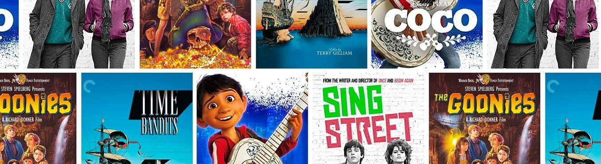

Entertainment Content
Anime is actually taken from the word animation and has become the word used by the majority of the world. In Japan this art form is called Japanamation, and it refers solely to what is produced in Japan by Japanese Manga-kas (A “ka” is the writer of a Manga, which is a Japanese comic book). The story from the comic book is then produced in animated form for movies and television. The world-wide popularity of Disney’s first animated film, Snow White and the Seven Dwarfs, sparked an interest in Japan’s cartoonists to create their own version of animated stories. Shimokawa Oten was one of the first animators in Japan, being responsible for five movies back in the early 1900’s. Unfortunately, ill health prevented him from continuing and he returned to working as a cartoonist instead of producing movies. Jun’ichi Kouchi did caricatures and some painting. In 1916, he was hired by Kobayashi Shokai as a cartoonist. His work was considered to be more technically advanced than any other Japanese animator and he is credited with at least 15 movies.
When compared to other forms of animation, Anime is seen by many viewers as the best. Case in point, the various incarnations of Transformers. That is just one story done many different ways. Anime has many different stories within the main category of giant machines. Some of these stories are Zoids, Evangelion, and the various series of Gundam. Mickey Mouse, for example, is a series of individual stories with only the characters in common; there is no timeline. The Zoids series is a clearly ongoing story that has evolved over the years. As in Chaotic Century (Series 1) the main character, Van Flyheight, was the pilot of a blue Blade Liger. In Zoids New Century Zero (Series 3) the Blade Liger has now become Liger Zero, a much more advanced machine with a great deal more power. It is widely accepted that this pilot, Bit Cloud, is the descendant of the original pilot, Van. Clearly these stories continue on through generations. Transformers is a story that remains static and does not evolve through time. The designs have changed a lot over time, but the story characters are still the same as in the beginning.